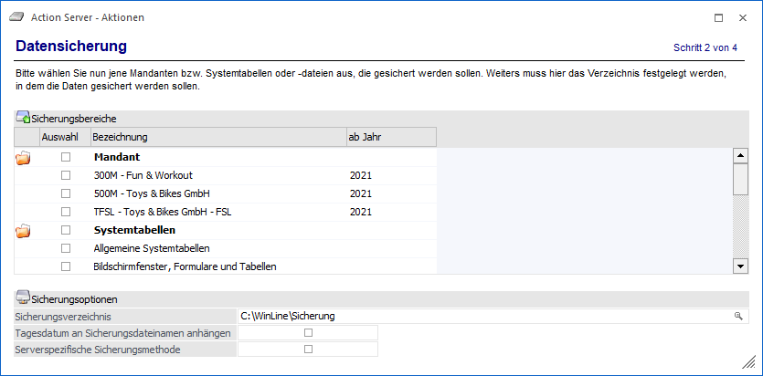

Zunächst können aus der Tabelle "Sicherungsbereiche" jene Bereiche ausgewählte werden, welche gesichert werden sollen.
Hinweis
Wird im Mandanten mit wirtschaftsjahrübergreifenden Stammdaten gearbeitet, so stehen in der Spalte "ab Jahr" nur noch die zusammengefassten Wirtschaftsjahre, bzw. die einzelnen unabhängigen Jahre zur Auswahl.
Ø Sicherungsverzeichnis
Zusätzlich zur Auswahl der zu sichernden Daten kann angegeben werden, in welches Verzeichnis die Sicherungsdatei gestellt werden soll. Der Dateiname lautet dabei "CWLBackup.MBAC".
Ø Tagesdatum an Sicherungsdateinamen anhängen
Weiter besteht die Möglichkeit durch Aktivieren der Checkbox "Tagesdatum an Sicherungsdateinamen anhängen" an den Namen der Sicherung das Tagesdatum anzufügen.
Beispiel
Grundsätzlich wird als Sicherungsdateiname "CWLBackup.MBAC" vergeben. Wird die erwähnte Option aktiviert, so kann die Datei z.B. so aussehen "CWLBackup_20211205".
Ø Serverspezifische Sicherungsmethode
Mit dieser Methode kann die Sicherung schneller durchgeführt werden, wobei diese Art der Sicherung immer nur auf dem gleichen Datenbanksystem rückgesichert werden kann.
Ist die Checkbox deaktiviert, dann dauert die Sicherung etwas länger, dafür kann aber auch auf einem anderen System rückgesichert werden.
Hinweis
Wenn bei der Datensicherung im Action Server Fehler auftreten, werden zusätzlich ausführlichere Fehlermeldungen in das Audit geschrieben.
Nach der Definition der Aktionsdetails erfolgt im nächsten Schritt die Angabe zu "Benutzer und Mandant".